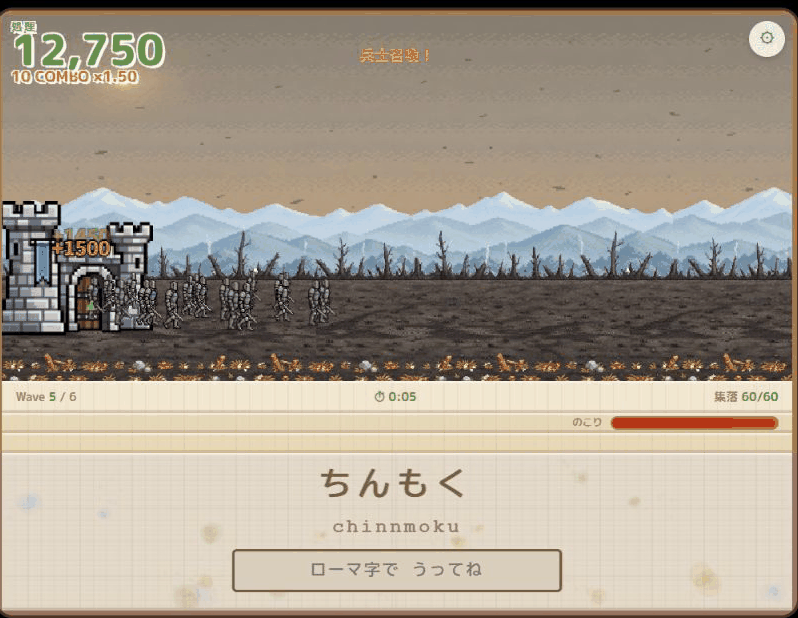

Soldier Typing
A military-style typing game where you type to summon soldiers and fight off a monster army. The keystroke rhythm is deeply satisfying. Played with a keyboard, for PC.
Best played on a PC with a keyboard. The game interface is in Japanese - you type hiragana words using romaji (Latin letters), so it's great practice if you're learning Japanese. If you use Japanese input software, turn the IME off before you start.
Ranking
Scores from players who cleared the game — see how you stack up. Enter a name when you finish a run, or your score won't appear on the board.
Type romaji to summon soldiers and hold the line against a horde of monsters. The more you type, the more soldiers march out — they advance and fight on their own. Keep enemies away from your castle and take down the boss of each wave. A keyboard game for PC, and since the words are Japanese (shown in hiragana, typed in romaji), it doubles as Japanese typing practice.
Before you play: this is a keyboard game, so PC is recommended. If you have a Japanese IME installed, switch it off first.
I built this one, so the word counts, wave lengths and boss numbers below are read off the source rather than estimated from playing.
At a Glance
| Genre | Typing / lane defense |
|---|---|
| Price | Free, no install, no sign-up |
| Platform | PC recommended (keyboard controls) |
| Input | Romaji (Latin letters; turn Japanese IME off if you have one) |
| Language | Game interface is in Japanese — type hiragana words in romaji |
| Length | 5 waves, 5 bosses |
| Vocabulary | 150 words, 30 per wave, none shared between waves |
| Music | 7 tracks, with separate boss themes |
| Ranking | Online, shared by all players |
| Sequel | Soldier Typing 2 |
How to Play
- Type the romaji shown at the bottom of the screen accurately to summon a soldier
- Soldiers automatically march toward the enemy and fight without further input
- If an enemy reaches your castle, it's game over
- Defeat the boss of every wave (waves 1–5) to win
That's the whole control scheme — just type. Keep your hands moving and keep sending soldiers to the front. There is no attack button, no unit selection and nothing to click; the only thing standing between you and the castle falling is how fast you can spell.
The Words
Each wave draws from its own pool of thirty words, and no word appears in more than one wave, so 150 in total. The difficulty curve is in the length rather than in obscurity: wave 1 is two and three kana (neko, inu, yama, sora), and waves 2 through 5 sit at three and four (sakura, yuusha, kaminari, tanabata).
What changes after wave 2 is the subject matter, not the difficulty. Wave 3 is themed on battle, wave 4 on the demon lord, wave 5 on the divine. The words you are typing tell you where the story has got to, which is the only narration this game has.
The Bosses
Every wave ends on a boss, and if you have not triggered one within 90 seconds the game sends it out anyway, so no wave can stall forever.
- Amoeba — 500 HP, 5 damage. The tutorial in monster form
- Nyalga, the Flying Magic Cat — 3,600 HP. Seven times the health of the first boss, arriving one wave later
- Vel, the Great Bat of the Night Sky — 3,200 HP but faster and hitting harder than Nyalga; the health bar is not the whole story
Show the wave 4 and wave 5 bosses (spoilers)
Wave 4 is the Demon Lord, and the numbers are deliberately strange: 1,600 HP, the lowest of any boss after the first, paired with 24 damage a hit and the slowest movement in the game. He is not built to be a wall. He is built to change what the game is about, and the wave 4 music is a different track from every other boss for that reason.
Wave 5 is God: 9,600 HP, 42 damage, and the longest attack range in the game at 110. This is the only fight where your soldiers start dying faster than you can spell them into existence, and the answer is not accuracy, it is not stopping.
Everything Here Is Drawn in Code
There are no image files in this game. Every character — the soldiers, the archers, the goblins, the hobgoblins, the amoeba, the cat, the bat, the hero, the demon lord, the god — is a sprite defined as data in the source and painted to the canvas at runtime, two frames each so they animate. Ten characters, twenty frames, all of it typed out by hand. It is why the whole game is one file and loads instantly, and it is also why everything is the size it is: I could not draw anything more detailed than that at that resolution.
Developer's Note
Rattle off short words and soldiers come pouring out, until the screen is buzzing with your own little army. I love games like Undertale that hit you with a "wait, what?" moment mid-play, so I tucked a small surprise into this one too. I hope the turn things take around wave 4 catches you off guard.
The 90-second forced boss was a late addition and it fixed a problem I had not seen coming. Good typists were clearing the field so fast that the boss trigger never fired, and they sat in an empty wave wondering what they had done wrong. Being punished for playing well is the worst kind of bug, because it does not look like one.
FAQ
- Can I play on a phone?
- It's a keyboard game, so we recommend playing on a PC.
- My keystrokes aren't registering correctly.
- You summon soldiers by typing romaji (Latin letters). If you use Japanese input software, turn the IME off before you start.
- Do I need to read Japanese?
- No. The words are shown in hiragana with the romaji spelled out, and you type the romaji. You do not need to know what any of them mean, though it is decent practice if you are learning.
- How do I win?
- Defeat the boss of all 5 waves to clear the game. If an enemy reaches your castle, it's game over.
- Nothing is happening and there's no boss.
- Ninety seconds into a wave the boss is sent out whether or not you triggered it, so a wave cannot stall permanently. If the screen is empty, it is about to stop being empty.
- Does my score go anywhere?
- Enter a name when you start and your score reaches the online ranking board above, which everyone playing shares. Soldier Typing 2 keeps a separate table, so scores from the two games never mix.
- Do I need to play this before the sequel?
- No. Soldier Typing 2 stands on its own, though it does assume your hands already know the loop.
There Is a Sequel
Soldier Typing 2 runs on the same keystrokes, goes six waves instead of five, and hides a boss that is not on the map. It is free and it plays in the browser the same way this one does.

Soldier Typing 2 Six waves, a hidden boss, and a door that opens only after you win.